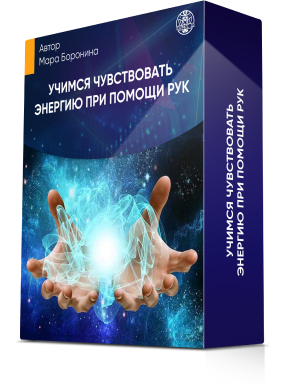

Программа марафона
День 1-й
21 сентября в 15:00 мск
Диагностика ваших врождённых способностей

- Узнаете, что такое ясновидение, яснознание, яснослышание, ясночувствование и поймёте, в чем разница?
- Определите, есть ли у вас врожденный дар?
- Пройдете практику на выявление Личного Канала Сверхспособностей
- Пройдете практику на раскрытие Аджна-чакры раскрытие Аджна-чакры усиления восприятия информации
- Совершите практику альфа-погружение альфа-погружение на выявление вредительских воздействий со стороны
- Узнаете, где находится Центр Управления Судьбой
РЕЗУЛЬТАТ:
- Знаете, что сверхспособности — это не удел избранных, вы тоже обладаете ими с рождения, главное — выявить и раскрыть свой потенциал
- Определили, какие каналы восприятия существуют и как их использовать для усиления своих возможностей для себя и близких, на работе и в быту
- Выявили сторонние негативные воздействия, которые не дают развиваться вашим способностям
День 2-й
22 сентября в 15:00 мск
Диагностика ваших врождённых способностей

- Пройдете диагностику на выявление блоков энергии
- Сделаете нумерологический расчет сверхспособностей по дате рождения
- Пройдете практику на раскрытие чувствования энергии в руках
- Получите практику раскрытия энергии на каждый день
РЕЗУЛЬТАТ:
- Знаете, какие именно способности были даны вам при рождении
- Научились чувствовать энергию с помощью рук и понимаете, как можно использовать её для определения проблем со здоровьем и устранения боли
- Освоили методику экстренной энергетической помощи и знете, как мгновенно восстановить работоспособность при упадке сил
День 3-й
23 сентября в 15:00 мск
Диагностика ваших врождённых способностей

- Узнаете 6 законов Сверхсилы
- Выясните, что делать, если вы обнаружили в себе сверхспособности: как ими управлять и что будет, если их не применять на практике
- Узнаете, как использовать вещие сны для реализации способностей
- Получите практику восполнения ресурса и энергии за 6 минут
- Пройдете практику-доступ к Центру Сверхсилы в вашем теле
- Узнаете, как формулировать намерения и желания так, чтобы они исполнялись с вероятностью 100%
РЕЗУЛЬТАТ:
- Поняли, как экологично управлять своими способностями и использовать их для помощи себе и близким
- Знаете, как взаимодействовать с вещими снами и формировать намерение так, чтобы достигать свих желаний и целей со 100% точностью
- Восстановили свой энергетический баланс на практикуме, после чего вы ещё неделю ощущаете выраженный эффект: прилив сил и работоспособности, позитивное настроение, заряд мотивации, отличное самочувствие, повышение дохода и пребывание на волне удачных обстоятельств